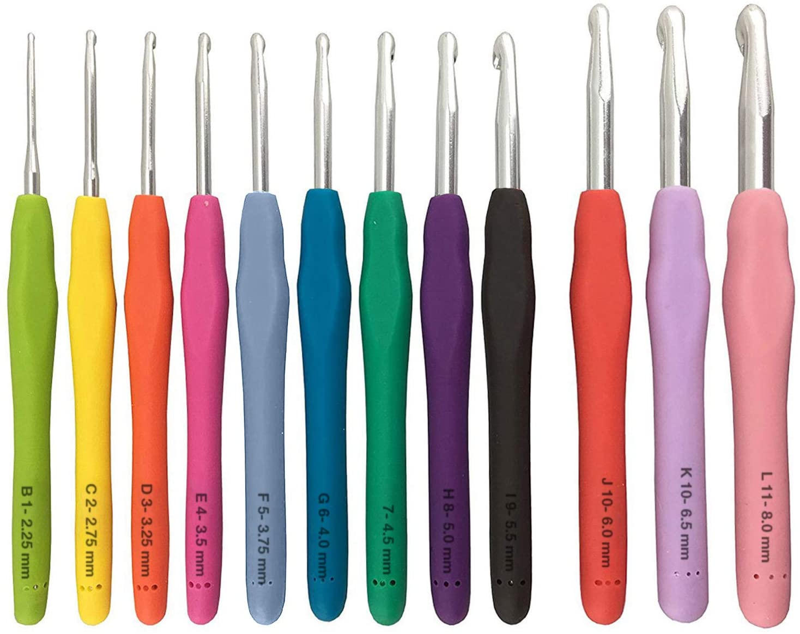
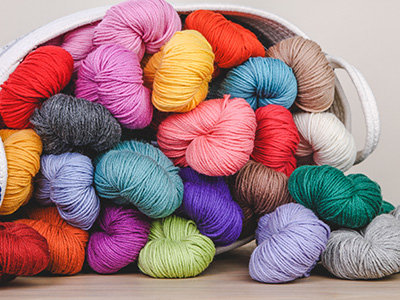
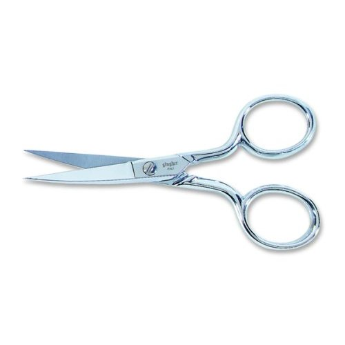

Tools You Need
A short list of tools you need to start crocheting!
| Hook(s)  |
You can start with a single crochet hook if you'd like, but its likely more cost effective to get a set with a range of sizes like the one pictured to the left. The size you use will depend on your yarn and pattern. |
|---|---|
|
Yarn  |
You can start with any yarn you want, but it is a good idea to start with a worsted weight yarn in a light color so that you can see your stitches easily. |
|
Scissors
 |
Small scissors with a pointed tip are important for getting into small spaces and snipping yarn. Look for "embroidery scissors" to find them. |
Tapestry Needles |
Tapestry needles are used for weaving in loose ends. Some people like needles with bent ends, plastic needles, etc. but any kind will do. Getting an assortment of sizes will let you work with all sizes of yarn. |
Optional: Stitch Markers |
You can use anything for a stitch marker, like a paper clip or even a piece of different colored yarn. Be sure if you purchase dedicated stitch markers that they open up: kntting stitch markers hang off of a circular piece that doesn't come undone and won't work for crochet! |
Optional: Stitch Counter |
Counting your stitches and rows is important, but some choose to use a pen and paper rather than dedicated counting devices. Pictured left are digital counters that go on your fingers, but there are various types of row and stitch counters available. |